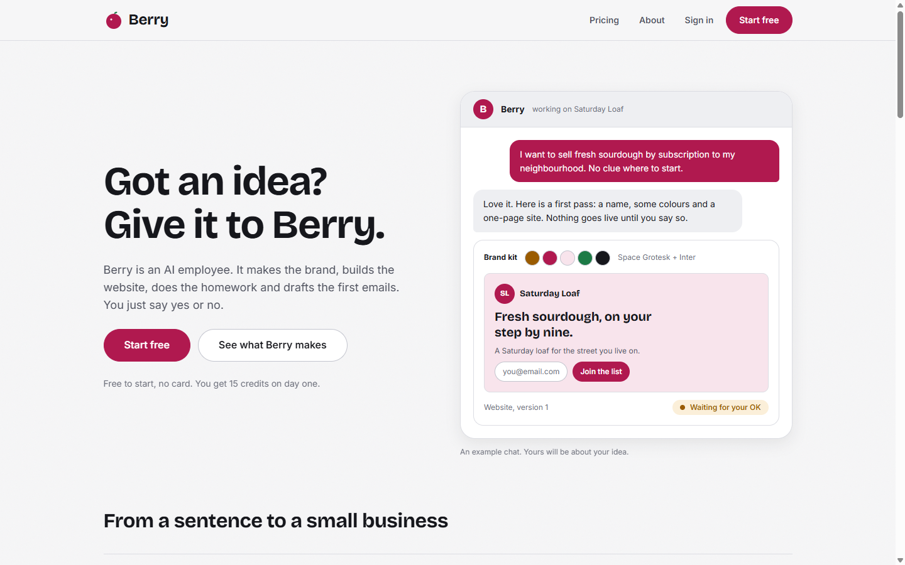

Work09
Berry
An AI employee for anyone with an idea. Describe it in plain words; Berry makes a brand kit (name, colours, fonts, logo), a website with a sign-up form, market research, and draft emails and posts. Nothing goes public without approval.
- Status
- Prototype v1
- Built
- Nov 2026
- Stack
- TypeScript, local model or Gemini, SQLite
- Code
- Private repository

01Problem
Starting a small business means juggling many tools before you know if anyone wants it.
02What I built
- The agent and its tools.
- An Approvals queue.
- A demo mode that runs offline with scripted replies.
Berry never sends anything itself: approved emails and posts are for the person to copy and send.
03How it was tested
An independent code review before release; 13 confirmed findings fixed, each with a test.
04Results
| Check | Result |
|---|---|
| Type check | Clean |
| Unit tests | 198/198 |
| Browser tests (desktop and phone) | 8/8 |
The failure: a security review found the dev server could serve its SQLite database. Fixed, and the server now binds to localhost only.
Known limit: on a small local model the brand copy is plain but usable.
05What I learned
Ask before anything public is a feature, not a limitation.
06Links
Private repository.